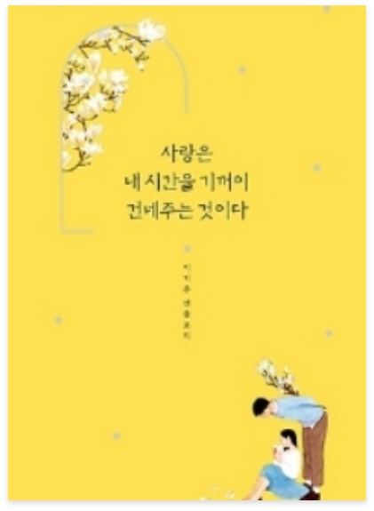

♡
사랑은 내 시간을 기꺼이 건네주는 것이다
-
저자 | 이기주
출판사 | 황소북스
출판년도 | 2020.03.18
이기주 작가의 첫 번째 앤솔로지 『사랑은 내 시간을 기꺼이 건네주는 것이다』. 총 132편으로 구성된 이 책은 눈과 귀로 채집한 글감을 가슴으로 들여다보며 써내려가는 이기주 작가 특유의 관찰력과 섬세한 문장이 총망라되어 있다. 그중에서도 사랑과 인생을 소재로 한 글과 문장들이 빛을 발한다. 남녀 간의 사랑은 물론이거니와 부모 자식 간의 사랑, 이웃 간의 사랑으로 확대되는 범우주적인 사랑에 대한 단상과 인생에 대한 통찰력 있는 문장들은 보는 이의 고개를 숙연하게 만든다. -
저자소개
저자 이기주는 말을 아껴 글을 쓴다. 쓸모를 다해 버려졌거나 사라져 가는 것에 대해 주로 쓴다. 고민이 깃든 말과 글에 탐닉한다. 가끔은 어머니 화장대에 담담히 꽃을 올려놓곤 한다. 지은 책으로는 《언어의 온도》, 《말의 품격》, 《한때 소중했던 것들》, 《글의 품격》, 《사랑은 내 시간을 기꺼이 건네주는 것이다》 등이 있다. -
출판사 서평
이기주 작가의 첫 번째 앤솔로지가 출간되었다. 《언어의 온도》를 비롯한 기존의 책들에서 뽑은 사랑과 인생에 대한 글과 최근 새롭게 쓴 글을 더했다. 여기에 백초윤 작가의 일러스트를 추가해 색다른 정취를 선사한다. 총 132편으로 구성된 이 책은 눈과 귀로 채집한 글감을 가슴으로 들여다보며 써내려가는 이기주 작가 특유의 관찰력과 섬세한 문장이 총망라되어 있다. 그중에서도 사랑과 인생을 소재로 한 글과 문장들이 빛을 발한다.
 자세히
자세히
해당 도서는 독서퀴즈 서비스가
제공되지 않습니다.
-
피치못할피치:D2020.09.06.부자가 되기 위해 사소한 습관부터 하나씩 고쳐봐야겠다는 생각이 들었고, 저를 한 번 되돌아볼 수 있는 시간이 되어 좋았습니다^^#존리 #존리의부자되는습관 #부자를꿈꾼다 #부자되기_도전! #로또당첨
-
자두자두졸령2020.09.04.부자되고싶다아아아아아 요즘 티비에 자주 보이시는 존리님! 궁금해서 읽어봤는데, 너무 재밌었어요~#존리 #부자 #독서 #책읽기습관 #저축
-
아네모네세모네2020.09.01.괜히 베스트셀러가 아니네요! 재밌는데 제가 과연 지킬 수 있을지 ㅠ_ㅠ#부자되는법 #부자되는습관 #존리 #책추천